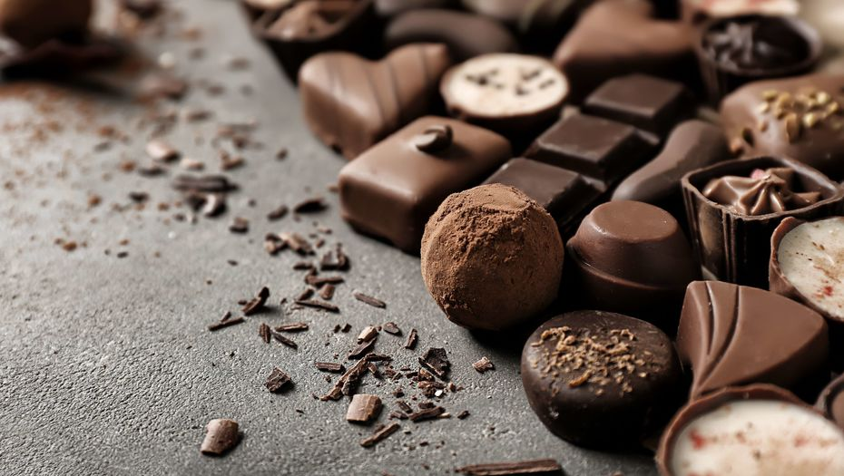

Глава фабрики "Рахат": Если в Китае распробуют наши конфеты, никаких мощностей не хватит.википедияСвыше 900 тонн конфет фабрика "Рахат" продала в Китае в 2019 году, в основном "самотёком" через Taobao. Рост поставок в Китай составил 477%.
Поставки в Китай занимают 4% экспорта компании "Рахат", в 2019 году в КНР экспортировали 938 тонн продукции. Лидирующие объёмы в экспорте "Рахат" по-прежнему приходятся на Россию – 7,8 тысяч тонн за 2019 год (61% от всего экспорта компании), следом идут Кыргызстан (12%), Таджикистан (7%) и Узбекистан (6%).
При этом поставки в Китай растут быстрее всего – сразу на 477% в 2019 году. На втором месте по темпам роста поставок – Монголия (138,8%).
Китай только учится потреблять продукты европейского плана. Они не понимают, что такое шоколад, шоколадные конфеты. Китайская молодёжь, которая начинает впитывать европейскую культуру, заказывает шоколад "Рахат" через Taobao.
Остальной сбыт идёт в СУАР, где есть много жителей со схожей с казахстанской культурой", – рассказывает председатель правления АО "Рахат" Константин Федорец.
вверх